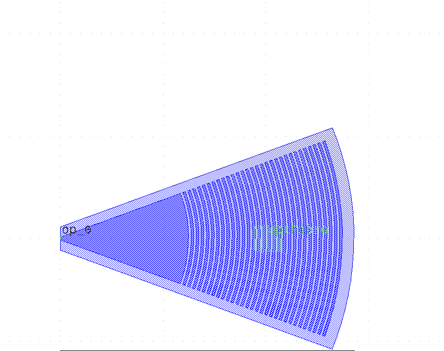

Module gpdk.components.grating_coupler.grating_coupler
Expand source code
from dataclasses import dataclass
import math
from typing import List, Tuple, cast
from fnpcell import all as fp
from gpdk.technology import get_technology
from gpdk.technology.interfaces import CoreCladdingWaveguideType
@fp.pcell_class(band="C")
@dataclass(eq=False)
class GratingCoupler(fp.PCell):
"""
Attributes:
length: defaults to 25.0
half_degrees: defaults to 20
ellipse_ratio: defaults to 1.0, Ellipse(Major/Minor)
tooth_width: defaults to 0.5
etch_width: defaults to 0.5
teeth: defaults to 30
waveguide_type: type of waveguide
port_names: defaults to ["op_0"]
Examples:
```python
TECH = get_technology()
gc = GratingCoupler(name="f", etch_width=0.5, tooth_width=0.5, length=25, half_degrees=40, teeth=30, waveguide_type=TECH.WG.FWG.C.WIRE)
fp.plot(gc)
```

"""
length: float = fp.PositiveFloatParam(default=25.0).as_field()
half_degrees: float = fp.DegreeParam(default=20).as_field()
ellipse_ratio: float = fp.PositiveFloatParam(default=1.0, min=1.0, doc="Ellipse(Major/Minor)").as_field()
tooth_width: float = fp.PositiveFloatParam(default=0.5).as_field()
etch_width: float = fp.PositiveFloatParam(default=0.5).as_field()
teeth: int = fp.IntParam(default=30, min=0, doc="Number of tooth").as_field()
waveguide_type: CoreCladdingWaveguideType = fp.WaveguideTypeParam(type=CoreCladdingWaveguideType).as_field()
port_names: fp.IPortOptions = fp.PortOptionsParam(count=1, default=["op_0"]).as_field()
def _default_waveguide_type(self):
return get_technology().WG.FWG.C.WIRE
def build(self) -> Tuple[fp.InstanceSet, fp.ElementSet, fp.PortSet]:
insts, elems, ports = super().build()
TECH = get_technology()
# fmt: off
length = self.length
half_degrees=self.half_degrees
ellipse_ratio = self.ellipse_ratio
tooth_width = self.tooth_width
etch_width = self.etch_width
teeth = self.teeth
waveguide_type = self.waveguide_type
port_names = self.port_names
overlap = 1.0
fiber_pin_width = 5
half_angle = math.radians(half_degrees)
waveguide_width = waveguide_type.core_width
waveguide_cladding = waveguide_type.cladding_width
waveguide_layer = waveguide_type.core_layer
cladding_layer = waveguide_type.cladding_layer
si_etch1_layer = TECH.WG.MWG.C.WIRE.core_layer
fbrtgt = TECH.LAYER.FIBREC_NOTE
content:List[fp.IPolygon] = []
# move gap line to the other side
content.append(
fp.el.EllipticalRing(outer_radius=(length, length / ellipse_ratio), layer=waveguide_layer, transform=fp.h_mirror()))
final_tooth_radius = length
for _ in range(teeth):
final_tooth_radius = final_tooth_radius + etch_width
inner_radius_x = final_tooth_radius
inner_radius_y = inner_radius_x / ellipse_ratio
final_tooth_radius = final_tooth_radius + tooth_width
outer_radius_x = final_tooth_radius
outer_radius_y = outer_radius_x / ellipse_ratio
# move gap line to the other side
content.append(fp.el.EllipticalRing(outer_radius=(outer_radius_x, outer_radius_y), inner_radius=(inner_radius_x, inner_radius_y), layer=waveguide_layer, transform=fp.h_mirror()))
delta_radius = (waveguide_width / 2.0) / math.tan(half_angle)
wedge_y = math.tan(half_angle) * (delta_radius + final_tooth_radius)
trapezoid = fp.el.Line(length=final_tooth_radius, stroke_width=waveguide_width, final_stroke_width=wedge_y * 2, layer=waveguide_layer)
content = list(fp.el.PolygonSet(content, layer=waveguide_layer) & trapezoid)
fiber_pin_tooth = 1 + int(teeth / 2) # 1 for wedge_polygon
fiber_pin_x = min(content[fiber_pin_tooth].polygon_points, key=lambda p: p[0])[0]
overlap_x = final_tooth_radius + overlap
overlap_y = overlap_x / ellipse_ratio
overlap_polygon = fp.el.EllipticalRing(outer_radius=(overlap_x, overlap_y), layer=si_etch1_layer, transform=fp.rotate(radians=math.pi))
inner_angle = math.pi / 2 - half_angle
perpendicular_overlap = overlap / math.sin(inner_angle)
overlap_delta = (perpendicular_overlap + (waveguide_width / 2)) / math.tan(half_angle)
overlap_wedge_y = math.tan(half_angle) * (overlap_delta + final_tooth_radius + overlap)
# overlap_wedge_x = overlap_delta + final_tooth_radius + overlap
trapezoid = fp.el.Line(length=overlap_x, stroke_width=waveguide_width + perpendicular_overlap * 2, final_stroke_width=overlap_wedge_y * 2, layer=si_etch1_layer)
overlap_polygon &= trapezoid
# content.append(overlap_polygon) # temporary commented for Circuit 01
cladding_x = final_tooth_radius + waveguide_cladding / 2
cladding_y = cladding_x / ellipse_ratio
cladding_polygon = fp.el.EllipticalRing(outer_radius=(cladding_x, cladding_y), layer=cladding_layer, transform=fp.rotate(radians=math.pi))
trapezoid = fp.el.Line(length=cladding_x, stroke_width=waveguide_cladding, final_stroke_width=math.tan(half_angle) * cladding_x * 2 + waveguide_cladding, layer=cladding_layer)
cladding_polygon &= trapezoid
content.extend(cladding_polygon)
# fiber port
elements = cast(List[fp.IElement], content)
elements.extend(
[
fp.el.Line(length=fiber_pin_width, stroke_width=fiber_pin_width, layer=fbrtgt, transform=fp.translate(fiber_pin_x, 0)),
fp.el.Text(content="optFiber", text_anchor=fp.Anchor.CENTER, vertical_align=fp.VertialAlign.MIDDLE, layer=fbrtgt, at=(fiber_pin_x + fiber_pin_width / 2, 0)),
]
)
ports += fp.Port(name=port_names[0], position=(0, 0), orientation=math.pi, waveguide_type=waveguide_type)
elems += elements
# fmt: on
return insts, elems, ports
if __name__ == "__main__":
from pathlib import Path
gds_file = Path(__file__).parent / "local" / Path(__file__).with_suffix(".gds").name
library = fp.Library()
TECH = get_technology()
# =============================================================
# fmt: off
library += GratingCoupler()
# library += GratingCoupler(name="f", etch_width=0.5, tooth_width=0.5, length=25, half_degrees=40, teeth=30, waveguide_type=TECH.WG.FWG.C.WIRE)
# library += GratingCoupler(name="f", transform=fp.translate(0, 60), waveguide_type=TECH.WG.FWG.C.WIRE)
# fmt: on
# =============================================================
fp.export_gds(library, file=gds_file)
# fp.plot(library)Classes
class GratingCoupler (name: str = None, bands: Optional[FrozenSet[fnpcell.interfaces.IBand]] = None, patches: Tuple[fnpcell.interfaces.IElement, ...] = (), port_names: Sequence[Union[None, str, fnpcell.interfaces.Hidden]] = ('op_0',), transform: fnpcell.transform.Affine2D = None, length: float = 25.0, half_degrees: float = 20, ellipse_ratio: float = 1.0, tooth_width: float = 0.5, etch_width: float = 0.5, teeth: int = 30, waveguide_type: CoreCladdingWaveguideType = None)-
Attributes
length- defaults to 25.0
half_degrees- defaults to 20
ellipse_ratio- defaults to 1.0, Ellipse(Major/Minor)
tooth_width- defaults to 0.5
etch_width- defaults to 0.5
teeth- defaults to 30
waveguide_type- type of waveguide
port_names- defaults to ["op_0"]
Examples:
TECH = get_technology() gc = GratingCoupler(name="f", etch_width=0.5, tooth_width=0.5, length=25, half_degrees=40, teeth=30, waveguide_type=TECH.WG.FWG.C.WIRE) fp.plot(gc)
Expand source code
class GratingCoupler(fp.PCell): """ Attributes: length: defaults to 25.0 half_degrees: defaults to 20 ellipse_ratio: defaults to 1.0, Ellipse(Major/Minor) tooth_width: defaults to 0.5 etch_width: defaults to 0.5 teeth: defaults to 30 waveguide_type: type of waveguide port_names: defaults to ["op_0"] Examples: ```python TECH = get_technology() gc = GratingCoupler(name="f", etch_width=0.5, tooth_width=0.5, length=25, half_degrees=40, teeth=30, waveguide_type=TECH.WG.FWG.C.WIRE) fp.plot(gc) ```  """ length: float = fp.PositiveFloatParam(default=25.0).as_field() half_degrees: float = fp.DegreeParam(default=20).as_field() ellipse_ratio: float = fp.PositiveFloatParam(default=1.0, min=1.0, doc="Ellipse(Major/Minor)").as_field() tooth_width: float = fp.PositiveFloatParam(default=0.5).as_field() etch_width: float = fp.PositiveFloatParam(default=0.5).as_field() teeth: int = fp.IntParam(default=30, min=0, doc="Number of tooth").as_field() waveguide_type: CoreCladdingWaveguideType = fp.WaveguideTypeParam(type=CoreCladdingWaveguideType).as_field() port_names: fp.IPortOptions = fp.PortOptionsParam(count=1, default=["op_0"]).as_field() def _default_waveguide_type(self): return get_technology().WG.FWG.C.WIRE def build(self) -> Tuple[fp.InstanceSet, fp.ElementSet, fp.PortSet]: insts, elems, ports = super().build() TECH = get_technology() # fmt: off length = self.length half_degrees=self.half_degrees ellipse_ratio = self.ellipse_ratio tooth_width = self.tooth_width etch_width = self.etch_width teeth = self.teeth waveguide_type = self.waveguide_type port_names = self.port_names overlap = 1.0 fiber_pin_width = 5 half_angle = math.radians(half_degrees) waveguide_width = waveguide_type.core_width waveguide_cladding = waveguide_type.cladding_width waveguide_layer = waveguide_type.core_layer cladding_layer = waveguide_type.cladding_layer si_etch1_layer = TECH.WG.MWG.C.WIRE.core_layer fbrtgt = TECH.LAYER.FIBREC_NOTE content:List[fp.IPolygon] = [] # move gap line to the other side content.append( fp.el.EllipticalRing(outer_radius=(length, length / ellipse_ratio), layer=waveguide_layer, transform=fp.h_mirror())) final_tooth_radius = length for _ in range(teeth): final_tooth_radius = final_tooth_radius + etch_width inner_radius_x = final_tooth_radius inner_radius_y = inner_radius_x / ellipse_ratio final_tooth_radius = final_tooth_radius + tooth_width outer_radius_x = final_tooth_radius outer_radius_y = outer_radius_x / ellipse_ratio # move gap line to the other side content.append(fp.el.EllipticalRing(outer_radius=(outer_radius_x, outer_radius_y), inner_radius=(inner_radius_x, inner_radius_y), layer=waveguide_layer, transform=fp.h_mirror())) delta_radius = (waveguide_width / 2.0) / math.tan(half_angle) wedge_y = math.tan(half_angle) * (delta_radius + final_tooth_radius) trapezoid = fp.el.Line(length=final_tooth_radius, stroke_width=waveguide_width, final_stroke_width=wedge_y * 2, layer=waveguide_layer) content = list(fp.el.PolygonSet(content, layer=waveguide_layer) & trapezoid) fiber_pin_tooth = 1 + int(teeth / 2) # 1 for wedge_polygon fiber_pin_x = min(content[fiber_pin_tooth].polygon_points, key=lambda p: p[0])[0] overlap_x = final_tooth_radius + overlap overlap_y = overlap_x / ellipse_ratio overlap_polygon = fp.el.EllipticalRing(outer_radius=(overlap_x, overlap_y), layer=si_etch1_layer, transform=fp.rotate(radians=math.pi)) inner_angle = math.pi / 2 - half_angle perpendicular_overlap = overlap / math.sin(inner_angle) overlap_delta = (perpendicular_overlap + (waveguide_width / 2)) / math.tan(half_angle) overlap_wedge_y = math.tan(half_angle) * (overlap_delta + final_tooth_radius + overlap) # overlap_wedge_x = overlap_delta + final_tooth_radius + overlap trapezoid = fp.el.Line(length=overlap_x, stroke_width=waveguide_width + perpendicular_overlap * 2, final_stroke_width=overlap_wedge_y * 2, layer=si_etch1_layer) overlap_polygon &= trapezoid # content.append(overlap_polygon) # temporary commented for Circuit 01 cladding_x = final_tooth_radius + waveguide_cladding / 2 cladding_y = cladding_x / ellipse_ratio cladding_polygon = fp.el.EllipticalRing(outer_radius=(cladding_x, cladding_y), layer=cladding_layer, transform=fp.rotate(radians=math.pi)) trapezoid = fp.el.Line(length=cladding_x, stroke_width=waveguide_cladding, final_stroke_width=math.tan(half_angle) * cladding_x * 2 + waveguide_cladding, layer=cladding_layer) cladding_polygon &= trapezoid content.extend(cladding_polygon) # fiber port elements = cast(List[fp.IElement], content) elements.extend( [ fp.el.Line(length=fiber_pin_width, stroke_width=fiber_pin_width, layer=fbrtgt, transform=fp.translate(fiber_pin_x, 0)), fp.el.Text(content="optFiber", text_anchor=fp.Anchor.CENTER, vertical_align=fp.VertialAlign.MIDDLE, layer=fbrtgt, at=(fiber_pin_x + fiber_pin_width / 2, 0)), ] ) ports += fp.Port(name=port_names[0], position=(0, 0), orientation=math.pi, waveguide_type=waveguide_type) elems += elements # fmt: on return insts, elems, portsAncestors
- fnpcell.pdk.pcell.PCell
- fnpcell.cell.cell_ref.CellRef
- fnpcell.mixin.transform_mixin.TransformMixin
- fnpcell.interfaces.ICellRef
- fnpcell.interfaces.IUpdatable
- fnpcell.interfaces.IElement
- fnpcell.interfaces.IRunnable
- fnpcell.interfaces.IAffineTransformable
Class variables
var ellipse_ratio : floatvar etch_width : floatvar half_degrees : floatvar length : floatvar port_names : Sequence[Union[None, str, fnpcell.interfaces.Hidden]]var teeth : intvar tooth_width : floatvar waveguide_type : CoreCladdingWaveguideType
Methods
def build(self) ‑> Tuple[fnpcell.pdk.collection.InstanceSet, fnpcell.pdk.collection.ElementSet, fnpcell.pdk.collection.PortSet]-
Abstract method must be implemented to build a pcell.
Expand source code
def build(self) -> Tuple[fp.InstanceSet, fp.ElementSet, fp.PortSet]: insts, elems, ports = super().build() TECH = get_technology() # fmt: off length = self.length half_degrees=self.half_degrees ellipse_ratio = self.ellipse_ratio tooth_width = self.tooth_width etch_width = self.etch_width teeth = self.teeth waveguide_type = self.waveguide_type port_names = self.port_names overlap = 1.0 fiber_pin_width = 5 half_angle = math.radians(half_degrees) waveguide_width = waveguide_type.core_width waveguide_cladding = waveguide_type.cladding_width waveguide_layer = waveguide_type.core_layer cladding_layer = waveguide_type.cladding_layer si_etch1_layer = TECH.WG.MWG.C.WIRE.core_layer fbrtgt = TECH.LAYER.FIBREC_NOTE content:List[fp.IPolygon] = [] # move gap line to the other side content.append( fp.el.EllipticalRing(outer_radius=(length, length / ellipse_ratio), layer=waveguide_layer, transform=fp.h_mirror())) final_tooth_radius = length for _ in range(teeth): final_tooth_radius = final_tooth_radius + etch_width inner_radius_x = final_tooth_radius inner_radius_y = inner_radius_x / ellipse_ratio final_tooth_radius = final_tooth_radius + tooth_width outer_radius_x = final_tooth_radius outer_radius_y = outer_radius_x / ellipse_ratio # move gap line to the other side content.append(fp.el.EllipticalRing(outer_radius=(outer_radius_x, outer_radius_y), inner_radius=(inner_radius_x, inner_radius_y), layer=waveguide_layer, transform=fp.h_mirror())) delta_radius = (waveguide_width / 2.0) / math.tan(half_angle) wedge_y = math.tan(half_angle) * (delta_radius + final_tooth_radius) trapezoid = fp.el.Line(length=final_tooth_radius, stroke_width=waveguide_width, final_stroke_width=wedge_y * 2, layer=waveguide_layer) content = list(fp.el.PolygonSet(content, layer=waveguide_layer) & trapezoid) fiber_pin_tooth = 1 + int(teeth / 2) # 1 for wedge_polygon fiber_pin_x = min(content[fiber_pin_tooth].polygon_points, key=lambda p: p[0])[0] overlap_x = final_tooth_radius + overlap overlap_y = overlap_x / ellipse_ratio overlap_polygon = fp.el.EllipticalRing(outer_radius=(overlap_x, overlap_y), layer=si_etch1_layer, transform=fp.rotate(radians=math.pi)) inner_angle = math.pi / 2 - half_angle perpendicular_overlap = overlap / math.sin(inner_angle) overlap_delta = (perpendicular_overlap + (waveguide_width / 2)) / math.tan(half_angle) overlap_wedge_y = math.tan(half_angle) * (overlap_delta + final_tooth_radius + overlap) # overlap_wedge_x = overlap_delta + final_tooth_radius + overlap trapezoid = fp.el.Line(length=overlap_x, stroke_width=waveguide_width + perpendicular_overlap * 2, final_stroke_width=overlap_wedge_y * 2, layer=si_etch1_layer) overlap_polygon &= trapezoid # content.append(overlap_polygon) # temporary commented for Circuit 01 cladding_x = final_tooth_radius + waveguide_cladding / 2 cladding_y = cladding_x / ellipse_ratio cladding_polygon = fp.el.EllipticalRing(outer_radius=(cladding_x, cladding_y), layer=cladding_layer, transform=fp.rotate(radians=math.pi)) trapezoid = fp.el.Line(length=cladding_x, stroke_width=waveguide_cladding, final_stroke_width=math.tan(half_angle) * cladding_x * 2 + waveguide_cladding, layer=cladding_layer) cladding_polygon &= trapezoid content.extend(cladding_polygon) # fiber port elements = cast(List[fp.IElement], content) elements.extend( [ fp.el.Line(length=fiber_pin_width, stroke_width=fiber_pin_width, layer=fbrtgt, transform=fp.translate(fiber_pin_x, 0)), fp.el.Text(content="optFiber", text_anchor=fp.Anchor.CENTER, vertical_align=fp.VertialAlign.MIDDLE, layer=fbrtgt, at=(fiber_pin_x + fiber_pin_width / 2, 0)), ] ) ports += fp.Port(name=port_names[0], position=(0, 0), orientation=math.pi, waveguide_type=waveguide_type) elems += elements # fmt: on return insts, elems, ports